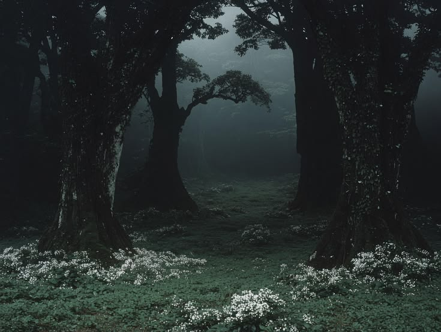

Lugares históricos
¿Primera vez en Halloweentown? No te preocupes, aquí te dejamos una lista de los lugares más importantes de la ciudad. ¡No te vayas sin conocerlos!

Cementerio Historico
El Cementerio Histórico de Halloweentown es el hogar de los muertos vivientes, también conocidos como zombis.
Cada uno permanece junto a su propia tumba conservando gran parte de la personalidad que tenía en vida;
aunque los domina un hambre voraz, muchos mantienen intacta su conciencia y son capaces de sostener una charla perfectamente fluida
con quien se anime a acercarse.
Puedes aprender mucho más con las visitas guiadas por el guía turístico Gerson, el viejo de la cripta.
Visitas guiadas por el viejo de la crypta
El cementerio ofrece visitas guiadas impartidas por el viejo de la cripta, un cadáver que habita nuestras tierras desde antes de la fundación de la ciudad;
Nadie mejor que un muerto viviente con consciencia para guiarte por el cementerio.
Sus destacada memoria permiten a los visitantes conocer la historia detrás de cada tumba famosa y monumento.
Además, se organizan eventos especiales durante todo el año; entre algunas de ellas, el viejo de la cripta relata distintas historias de terror para toda la familia. Se volvieron tan populares que obtuvieron su propio canal conocido como "Los cuentos de la cripta".

La Mansion de los Fantasmas
La gran mansión de los fantasmas es propiedad del temible conde Mortarion. El legado de su dinastia y la fama de su residencia convirtieron a "El Panteón de los Difuntos" en uno de los sectores más visitados de Halloweentown. Si bien el conde ya no habita la ciudad, el gran Señor Calabaza mantiene encendida la esperanza de que algún día regrese para volver a asombrarnos con su temible figura.
Visitas guiadas
La mansion ofrece visitas guiadas que invitan a los visitantes conocer la historia del sector y sus mejores monumentos.
Reserva tu visita guiada acá...
El museo de la ciudad
El Museo Histórico de Halloweentown es un lugar en el que se cuentan muchas de las historias más importantes de nuestra ciudad, incluyendo nuestro origen. Entre algunos de los artículos destacados se encuentran:
El ataúd del primer conde:
El primer conde Drácula usaba este ataúd para dormir de día y deambular de noche. Es célebre tanto por su legendario propietario como por las alucinaciones que desencadena —visiones de criaturas terroríficas y futuros catastróficos—, motivo por el cual permanece resguardado en una zona especial del museo lejos de los visitantes.
El amuleto maldito:
Esta pieza es en realidad una réplica del amuleto original que perteneció a una antigua entidad pagana llegada a la ciudad. Su energía rivaliza con la del Rey Calabaza y, según se cuenta, otorga un enorme poder a cambio de la cordura de quien lo posee. Como además alimenta la codicia de quienes lo observan, se mantiene a buen resguardo en la mansión del propio Rey Calabaza. Para conocer más sobre la historia de nuestra ciudad, pueden sumarse a las visitas guiadas del museo de Halloweentown.
Visitas guiadas y eventos especiales
El museo da visitas guiadas donde cualquiera puede ir y conocer la historia de Halloweentown y de todos sus objetos célebres.
Reserva tu visita guiada acá.
¿Listo para divertirte?
Si lo que buscas es terror y diversión, entonces ven y acompáñanos a HORROR LAND!!!. este fantastico sitio de horror y diversion esta lleno de atracciones horripilantemente peligrosas pero DIVERTIDAS!!! habra todo tipo de entretenimiento para todos los tipos de seres vivos y no vivos.
Entradas
| Entradas | Precio | Cantidad |
|---|---|---|
| General | 🎃︎2500 | c/u |
| VIP | 🎃︎3500 | c/u |
| Demoniaca | 🎃︎5000 | c/u |
Horarios
11:00 AM - 9:00 PM